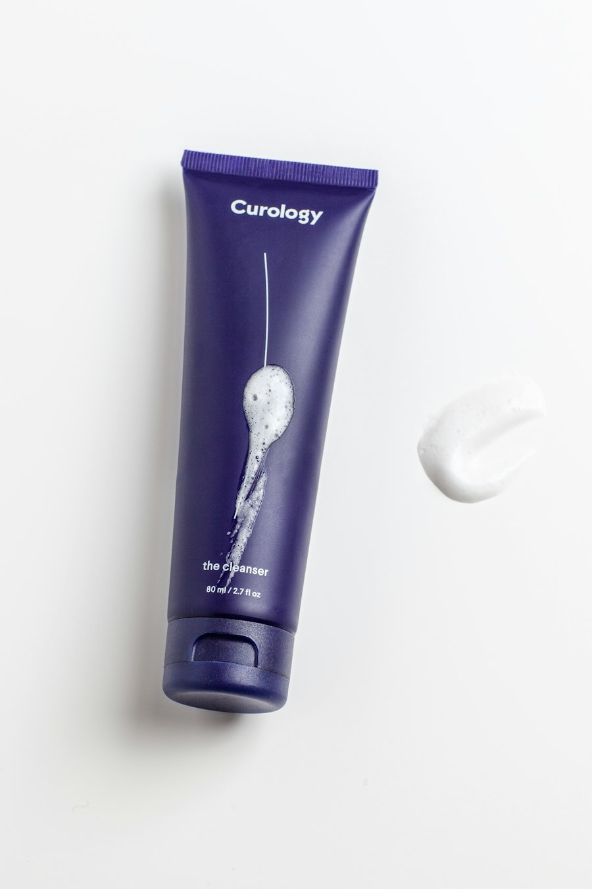

Client Care
Aftercare Guide
Aftercare guidance is general information. Always follow the specific instructions provided by your PMU artist.

Before Your Appointment
Arrive rested with clean skin. Avoid heavy brow makeup and share sensitivities.
First 24 Hours
Keep the area clean. Follow artist instructions. Avoid unnecessary touching.
Days 2–7
Gentle cleansing, avoid excessive moisture, never pick or scratch flaking.
Long-Term Care
SPF near (not on fresh) area, gentle skincare, annual colour reviews.
Touch-Up Guidance
Perfecting visit at 6–12 weeks; colour refresh every 12–24 months.
What to Avoid
Saunas, swimming, heavy sweating, exfoliants and retinoids near the area while healing.
Aftercare FAQ
Light flaking can occur as skin renews. Do not pick — let it shed naturally and follow your artist's guidance.
Avoid makeup on the treated area until your artist confirms healing — typically around 7–10 days.
If you notice unusual swelling, spreading redness, or have any concerns, contact the studio promptly.